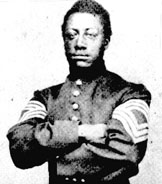

|

NAME: Lewis Henry Douglass
BORN: 1841
DIED: 1893
ALLEGIANCE: Union
HIGHEST RANK: Sergeant-Major
UNIT: 54th Massachusetts Infantry
RECORD: Enlisted in 1863, Mustered out 1865
|
|
Lewis Henry Douglass was one of the first volunteers for the
all-black northern fighting unit, the 54th Massachusetts
Infantry. Born on October 9, 1840 in New Bedford,
Massachusetts, Lewis was the son of the famous abolitionist
Frederick Douglass and his wife Anna Douglass. Along with
his younger brother Charles, Lewis trained at Readville,
Massachusetts, where he became a sergeant-major. The 54th
received its orders to ship out of Boston for the South
Carolina sea islands in the spring of 1863. After
participating in a few minor skirmishes, Lewis and the 54th
finally got its chance to participate in a major assault
when they were ordered to lead the charge on Ft. Wagner, a
massive battery guarding the Charleston harbor. The 54th
marched across the flat sand leading up to the fort and the
first attackers made it to the outer defenses, where they
fought hard and bravely, but were repelled.
Sgt. Maj. Lewis Douglass wrote that "This regiment has
established its reputation as a fighting regiment; not a man
flinched, though it was a trying time. Men fell all around
me. A shell would explode and clear a space of twenty feet,
our men would close up again, but it was no use we had to
retreat, which was a very hazardous undertaking. How l got
out of that fight alive I cannot tell, but I am here."
Writing to his wife, Lewis added, 'My Dear girl I hope again
to see you. I must bid you farewell should l be killed.
Remember if l die I die in a good cause. I wish we had a
hundred thousand colored troops we would put an end to this
war."
After the battle of Fort Wagner, in which the Union
suffered 1,515 casualties to the Confederate 174, the
exploits of the "brave black soldiers" of the 54th were
widely publicized and acclaimed. The 54th never again
participated in a large battle, and spent the rest of the
war in Florida, where they were mustered out in 1865. After
the war Lewis Henry Douglass tried his hand at several
occupations: a teacher in Rochester, New York; a real estate
speculator, railroad man in Denver, Colorado; a government
bureaucrat in Washington, D.C., where he lived with his wife
and children for many years.
Source: Christopher Bates for the History 139A website.
|